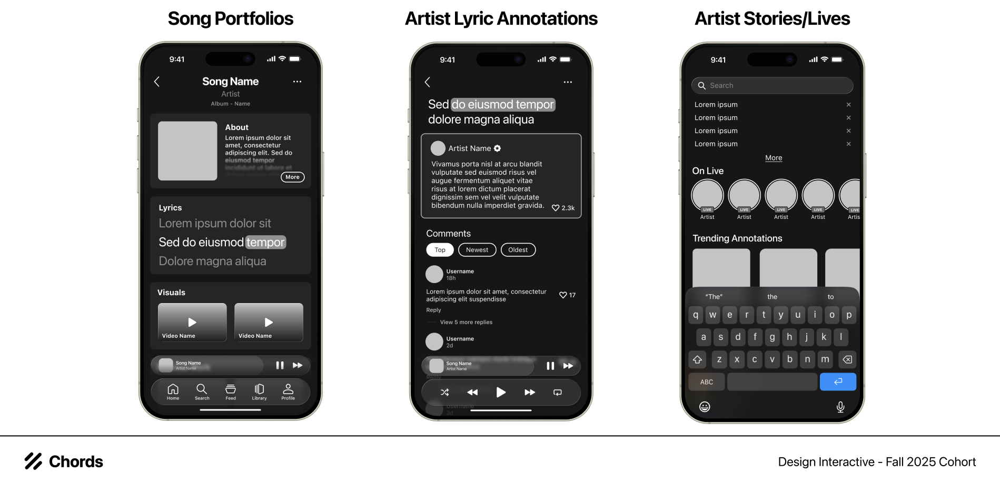
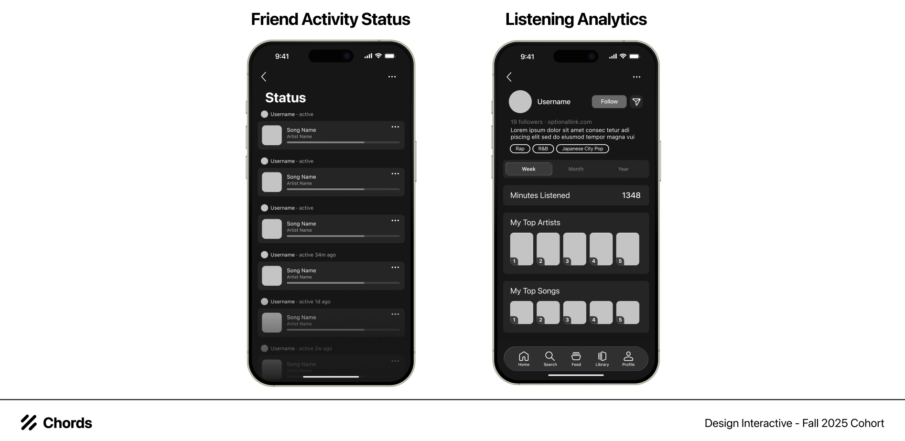
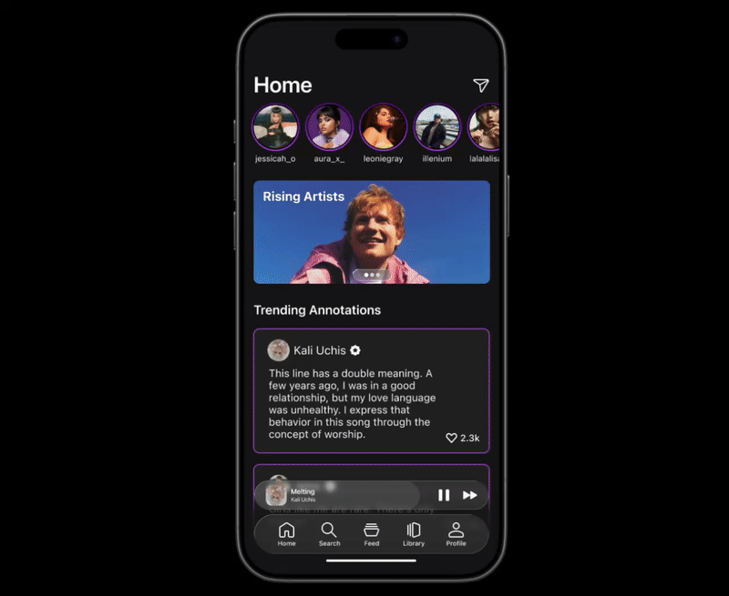
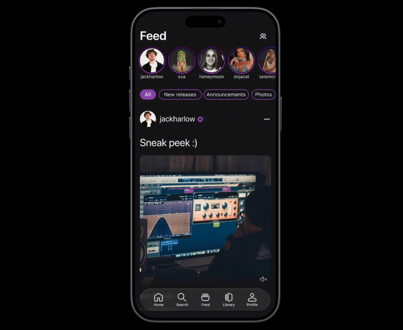
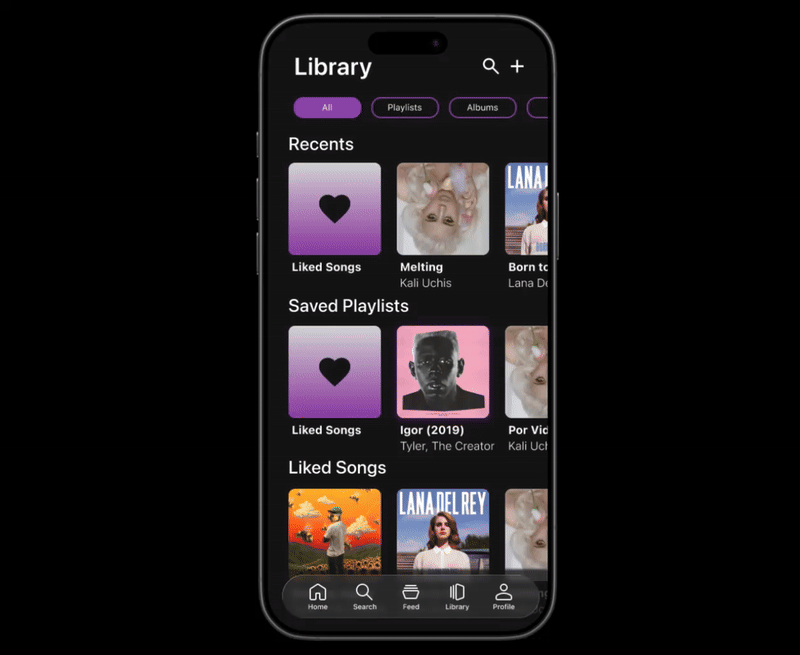
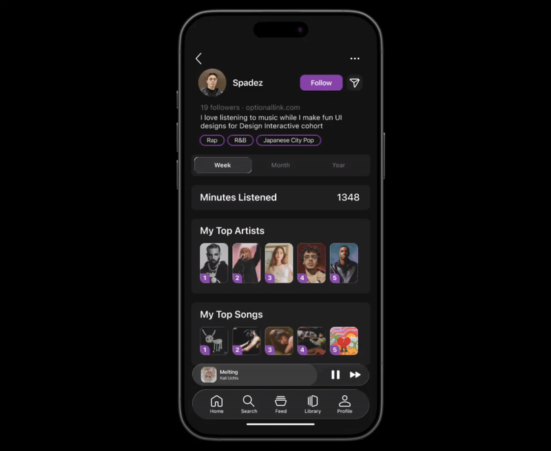

Design Interactive · Fall 2025
Chords
A music app that helps fans discover, learn about, and support the artists they love.
- Role
- Product designer
- Context
- Design Interactive Cohort Program
- Focus
- Research, UX, UI

Introduction
Introducing — Chords is a music app that builds connections by striking a chord between artists and listeners. Chords was created during a six-week sprint with Design Interactive’s 2025 Fall Cohort. During this time, we completely many rounds of ideation of finding gaps in music platforms to prototype a new and unique platform that centralizes understanding the artist.

Stage 1: User ResearchResearch Methods
Our team used mixed-methods of research to further understand our audience, their current relationship with their music platforms and music in general. We started this process with a survey that received 70+ responses and 10+ user interviews to better understand how the users navigated their platform. This combination of survey data and qualitative interviews enabled us to form a well-rounded perspective on user needs and opportunities for improvement. We also conducted competitive analysis on other music platforms (Apple Music, Spotify, Youtube Music, etc.) as well as some more social platforms (Weverse, Genius) for a better understanding of the social aspect.
Our objective
Our main research goal was to develop a solution that would allow listeners to be able to connect with other listeners, as well as artists that allows a more social aspect rather than just a platform to play and stream music.
Competitive Analysis

Both Apple Music and Spotify offer strong personalized music discovery and cross-platform syncing. Apple Music focuses on curated, mood-based playlists and recent releases but is more limited outside the Apple ecosystem. Spotify excels in customization, discovery tools, and content variety, though many features require a paid subscription. Overall, both platforms highlight opportunities to improve accessibility and social engagement.
Research Findings

A vast majority of users listen to music with an average of at least an hour per day. From our findings, we were able to conclude that there was a strong user interest in expanding music platforms beyond passive listening toward more interactive and social experiences. Participants expressed particular interest in collaborative features and additional artist-related content, indicating a strong desire to connect with others through shared listening experiences and to learn more about artists and their creative processes.
While social features were still valued, users placed greater emphasis on deeper forms of engagement that encourage participation and discovery. Overall, these insights support the goal of creating a more community-driven music platform that strengthens connections between listeners and artists.
Research Limitations
If given more time, we would expand more research on the perspective of an artist rather than solely focusing on the listener’s aspect. This would include how artists would realistically engage with or benefit from social interaction features.
After doing our research, we created an affinity map of all of our ideas and findings from the data collection. We decided to focus on four main points: social, listening, artist focus, and user focus. While ideating we were able to breakdown to a feature focus on some main ideas for features including a forum to talk about music, including a music making process and a place for artists to put our lyrics.
Feature Matrix
All Ideas

After Recycled Ideas

Stage 2: IdeationAffinity Mapping

From all the compiled features we ideated, we took them and graphed them, using a feature matrix to weigh the importance of our features and decide which features that we wanted to keep.
Low-Fidelity Sketching


After developing our initial concepts, we moved into the wireframing stage to better visualize and refine the structure of the platform. Through sketching, we explored layout ideas and user flows, allowing us to map out how users would navigate the experience. These wireframes outlined the core pages of the platform, including the home, search, feed, profile, and library, helping establish a cohesive foundation for the overall design before moving into higher-fidelity iterations.
User Flow

From ideation to sketching, we finalized a user flow in order to determine how we wanted our overall navigation of our platform. After onboarding, the user would be brought to the homepage. On the homepage, there would be artists’ stories on the top with a flow to the messages page. Scrolling further down the page, there would be self-tailored recommendations for the user to click into. If instead of these preferences, there is the search page. In this page, the user would be able to search for artists, songs, and lyrics. In addition, there would be a display of their recent searches, artists' lives, and trending lyrics. In the feed, it is a curated page dedicated for artists’ to update the listeners as well as a place for friends to check on each other’s listening status. Within each status, there is the ability to like or save each song to your library. Which brings us to the library page, a dedicated page for the user’s playlists and song organization. When a user clicks the lyrics icon within a song, they are taken to a lyrics view where annotated lines are highlighted, allowing them to tap into artist-created posts about each lyric and view comments from other listeners. Lastly, is the profile page, provided with two different profiles: the user and the artist. Within the artist’s profile, users would able to see both announcements they’ve made and their overall song portfolio.
Our Main Features
1. Lyric Annotations
2. Artist Portfolio
3. Friend Activity
4. Artist Stores and Lives
5. Listening Analytics
🧠 Problem Statement (HMW)
How might we create a more interactive and social listening experience that helps users feel connected to their music, favorite artists, and fellow fans?
Stage 3: Mid-Fidelity Prototyping
After creating our sketches, we started incorporating our ideas into wireframes from our lo-fis. We made many different iterations on layout to determine which would be the most eye-appealing and ease for the user. Specifically, we made layout iterations on our lo-fi sketches to better define our main features such that they would capture the social aspect and deep connection with music that would enhance the user experience:
• Song Portfolios
• Learn more about the song through the expandable lyrics and about section
• Artist Lyric Annotations
• View and comment on artist annotations on highlighted lyrics
• Artist Stories/Lives
• Discover new songs through artist-made content promoting their music
• Friend Activity Status
• See listening activity and online status from friends
• Listening Analytics
• Display most listened to artists and songs on public profile
These mid-fi wireframes helped us determine our end goal and how we wanted to approach future iterations. With our mid-fis, we had the necessary resources to begin our usability testing.
Song Portfolios, Artist Lyric Annotations, Artist Stories/Lives

Song portfolios provide contextual information, visuals, and media tied to each track, while artist lyric annotations allow creators to explain specific lines and engage directly with listener comments. Artist Stories and Lives further enhance connection by offering real-time and ephemeral content, creating a more social, immersive, and community-driven music experience.
Friend Activity Status, Listening Analytics

Friend Activity Status allows users to see what others are currently listening to, encouraging discovery and social engagement. Listening Analytics provides an overview of individual listening habits, including top artists, top songs, and time spent listening. With them both, they promote both social interaction and reflective engagement with music.
Stage 4: Usability Testing
Usability Testing Tasks
• Go to home page and find the story - explore home page
• Search for an artist
• Find the lives
• Go to Library and find a lyric annotation
• Go to Feed and find the activity status
• Find the artist page
• Navigate to their portfolio page
Our findings
After synthesizing feedback from the first round of usability testing, we iterated on the design and implemented significant changes to improve the overall user experience. This included exploring alternative design systems and transitioning to an approach that better aligned with user preferences.
Stage 5: Hi-Fidelity Prototyping
Design System

For our design system, we focused on creating a modern and intuitive design inspired by Apple’s new software design. To achieve this, we incorporated Liquid Glass components and rounded corners into our design. As for our color palette, we used dark colors such as black and purple to give the feeling of a safe space where you are forming a deeper connection while listening to music. Our typography consists of SF Pro, which is consistent and easily legible. For our iconography and components, we prioritized simplicity and integrated our color palette.
Hi-Fidelity: Home and Search

The Home page allows our users to discover rising artists, trending annotations, popular releases, new releases, and recommendations based on your saved lyrics. Stories posted by a variety of artists can be viewed at the top of the screen. Users can also send messages to their friends by tapping the message icon on the top right. Users can interact with artist stories and trending annotations by tapping on the heart icon to like the posts. The Search page helps users find artists or albums they are currently listening to or want to know more about. From there, users can also access artists’ lives and trending annotations.
Hi-Fidelity: Feed + Activity

The Feed page allows users to view posts made by followed artists. These posts include stories and exclusive content of a behind the scenes look of their creative process. The page is organized by category within a vertical-scroll navigation bar. These categories include new releases, announcements, photos, videos, and polls. Users can like and comment on artists’ posts and vote for what they would like for each poll that the artists make. The friend icon on the top right of the screen leads to the activity page where users can view their friend’s status and what songs they are currently listening to. By tapping the icon next their friend’s song, users can discover new music and add to liked songs, add to playlist, add to queue, share, or go to artist. The friend activity status feature emphasizes the listening activity of the user’s friends to further spotlight social connection through music.
Hi-Fidelity: Library

The Library page contains a collection of playlists and songs saved by the user, which have expandable lyrics that can be viewed fully while the song is being played. The song covers are arranged in a modular format to enhance usability, and viewing the song itself follows a similar UI to that of other popular music streaming platforms. The key difference lies in the highlighted portion of the lyrics, which when clicked on, brings the user to a new page where the artist has written a short annotation entailing what the lyric means to them and why they wrote it. From here, users can interact with the artist annotation as if it were a social media post, being able to leave comments expressing their own thoughts on the annotated lyric. This feature—called “lyric annotations”—bridges the gap between artists and users through engagement with the artist-written annotations, providing a way to connect to artists in addition to the music they produce.
Hi-Fidelity: Profile

The design of our Profile page takes inspiration from those seen in popular social media platforms, with a short about section and an option to follow the user. Its unique features are the inclusion of the user’s most listened to songs and artists, as well as the total minutes they have spent listening to music on the app and tags for the music genres they listen to the most. Artists also have their own profiles, where they can spotlight a specific song and create public profiles for each of their songs, called “song portfolios.” Within a song’s portfolio, users can access information about the song including its release date, album, and a basic description from the artist. Users can also find a minimized lyrics section, complementary video content including a behind the scenes and music video, and visuals regarding the song’s production process on the same screen. These features allow users to build their profile based on their music preferences and learn more about the songs and artists they are interested in.
Stage 6: Presentation Day
On presentation day, our team presented our 10 minute slide deck — including our entire design process to our prototyping of our product. After our presentation, we received a lot of valuable feedback from our judge, Jamie, on some visual details of our design. Based on this feedback, we aim to refine the layout and make adjustments to our navigation bar components.
Challenges
Our main challenge throughout these six weeks was finding direction on our project. Since a lot of current music platforms are already optimized, it was quite difficult initially in finding a gap in the market. From this take, we learned that there aren’t that many platforms that focus on the artist and their music process we used that direction to develop Chords.
Takeaways and Next Steps
Going forward, we want to improve the financial and subscription aspects of the platform by examining key business areas such as artist revenue, tailored subscription options, advertising opportunities, and streaming or hosting infrastructure. We also plan to add more micro-interactions and enhance existing features to increase overall user engagement. This includes improving our recommendation algorithms, introducing new ways for users to engage more deeply with music, and expanding social sharing features with visual guides.
See on Figma ↗